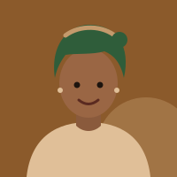

Jeunes adultes
Développez vos compétences et impliquez-vous dans des projets concrets qui ont un impact direct dans votre milieu.
En savoir plus →Depuis 9 ans en Montérégie, nous favorisons l'engagement citoyen, l'entraide et la participation active à la vie communautaire.
Chaque don nous rapproche de notre objectif. Merci de faire grandir la solidarité en Montérégie !
Grâce au soutien de nos partenaires et bénévoles, nous développons des initiatives rassembleuses afin de mettre les citoyens en contact et de renforcer la solidarité locale.
Développez vos compétences et impliquez-vous dans des projets concrets qui ont un impact direct dans votre milieu.
En savoir plus →Tissez des liens, découvrez votre nouvelle communauté et participez activement à des activités d'intégration et d'entraide.
En savoir plus →Partagez vos expériences, donnez de votre temps précieux et restez au cœur de l'action citoyenne de votre région.
En savoir plus →Découvrez l'éventail de nos actions quotidiennes sur le terrain.
Organisation régulière d'activités auprès de divers organismes de la région pour répondre aux besoins locaux.
Formations pratiques sur l'engagement communautaire et campagnes sur les grands enjeux sociaux.
Accompagnement personnalisé pour jumeler les citoyens enthousiastes aux besoins des organismes partenaires.
Des personnes engagées qui guident l'organisme au quotidien.
Travailleuse sociale de formation, elle a fondé l'organisme en 2017 avec la conviction que chaque citoyen peut changer sa communauté.
Ancien directeur d'école primaire, il veille à la saine gouvernance et au développement des partenariats régionaux.

Arrivée de Dakar en 2015, elle coordonne nos 400 bénévoles et les programmes d'accueil des nouveaux arrivants.
Les mots de celles et ceux qui font vivre notre communauté.
Leur soutien rend nos actions possibles.
Abonnez-vous à notre infolettre mensuelle pour ne rien manquer des événements à venir et des histoires inspirantes de nos bénévoles.